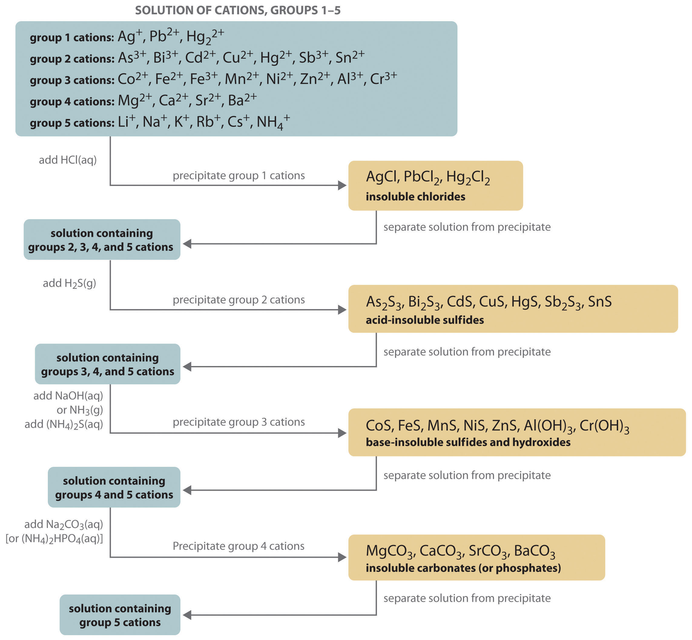

The composition of relatively complex mixtures of metal ions can be determined using qualitative analysisA procedure for determining the identity of metal ions present in a mixture that does not include information about their amounts., a procedure for discovering the identity of metal ions present in the mixture (rather than quantitative information about their amounts).
The procedure used to separate and identify more than 20 common metal cations from a single solution consists of selectively precipitating only a few kinds of metal ions at a time under given sets of conditions. Consecutive precipitation steps become progressively less selective until almost all of the metal ions are precipitated, as illustrated in Figure 17.10 "Steps in a Typical Qualitative Analysis Scheme for a Solution That Contains Several Metal Ions".
Figure 17.10 Steps in a Typical Qualitative Analysis Scheme for a Solution That Contains Several Metal Ions
Most metal chloride salts are soluble in water; only Ag+, Pb2+, and Hg22+ form chlorides that precipitate from water. Thus the first step in a qualitative analysis is to add about 6 M HCl, thereby causing AgCl, PbCl2, and/or Hg2Cl2 to precipitate. If no precipitate forms, then these cations are not present in significant amounts. The precipitate can be collected by filtration or centrifugation.
Next, the acidic solution is saturated with H2S gas. Only those metal ions that form very insoluble sulfides, such as As3+, Bi3+, Cd2+, Cu2+, Hg2+, Sb3+, and Sn2+, precipitate as their sulfide salts under these acidic conditions. All others, such as Fe2+ and Zn2+, remain in solution. Once again, the precipitates are collected by filtration or centrifugation.
Ammonia or NaOH is now added to the solution until it is basic, and then (NH4)2S is added. This treatment removes any remaining cations that form insoluble hydroxides or sulfides. The divalent metal ions Co2+, Fe2+, Mn2+, Ni2+, and Zn2+ precipitate as their sulfides, and the trivalent metal ions Al3+ and Cr3+ precipitate as their hydroxides: Al(OH)3 and Cr(OH)3. If the mixture contains Fe3+, sulfide reduces the cation to Fe2+, which precipitates as FeS.
The next metal ions to be removed from solution are those that form insoluble carbonates and phosphates. When Na2CO3 is added to the basic solution that remains after the precipitated metal ions are removed, insoluble carbonates precipitate and are collected. Alternatively, adding (NH4)2HPO4 causes the same metal ions to precipitate as insoluble phosphates.
At this point, we have removed all the metal ions that form water-insoluble chlorides, sulfides, carbonates, or phosphates. The only common ions that might remain are any alkali metals (Li+, Na+, K+, Rb+, and Cs+) and ammonium (NH4+). We now take a second sample from the original solution and add a small amount of NaOH to neutralize the ammonium ion and produce NH3. (We cannot use the same sample we used for the first four groups because we added ammonium to that sample in earlier steps.) Any ammonia produced can be detected by either its odor or a litmus paper test. A flame test on another original sample is used to detect sodium, which produces a characteristic bright yellow color. As discussed in Chapter 6 "The Structure of Atoms", the other alkali metal ions also give characteristic colors in flame tests, which allows them to be identified if only one is present.
Metal ions that precipitate together are separated by various additional techniques, such as forming complex ions, changing the pH of the solution, or increasing the temperature to redissolve some of the solids. For example, the precipitated metal chlorides of group 1 cations, containing Ag+, Pb2+, and Hg22+, are all quite insoluble in water. Because PbCl2 is much more soluble in hot water than are the other two chloride salts, however, adding water to the precipitate and heating the resulting slurry will dissolve any PbCl2 present. Isolating the solution and adding a small amount of Na2CrO4 solution to it will produce a bright yellow precipitate of PbCrO4 if Pb2+ was in the original sample (Figure 17.11 "The Separation of Metal Ions from Group 1 Using Qualitative Analysis").
As another example, treating the precipitates from group 1 cations with aqueous ammonia will dissolve any AgCl because Ag+ forms a stable complex with ammonia: [Ag(NH3)2]+. In addition, Hg2Cl2 disproportionates in ammonia (2Hg22+ → Hg + Hg2+) to form a black solid that is a mixture of finely divided metallic mercury and an insoluble mercury(II) compound, which is separated from solution:
Equation 17.39
Hg2Cl2(s) + 2NH3(aq) → Hg(l) + Hg(NH2)Cl(s) + NH4+(aq) + Cl−(aq)Figure 17.11 The Separation of Metal Ions from Group 1 Using Qualitative Analysis

In (a), the cations of group 1 precipitate when HCl(aq) is added to a solution containing a mixture of cations. (b) When a small amount of Na2CrO4 solution is added to a sample containing Pb2+ ions in water, a bright yellow precipitate of PbCrO4 forms. (c) Adding aqueous ammonia to a second portion of the solid sample produces a black solid that is a mixture of finely divided metallic mercury, an insoluble mercury(II) compound [Hg(NH2)Cl], and a stable [Ag(NH3)2]+(aq) complex. (d) The presence of Ag+ is detected by decanting the solution from the precipitated mercury and mercury complex and adding hydrochloric acid to the decanted solution, which causes AgCl to precipitate.
Any silver ion in the solution is then detected by adding HCl, which reverses the reaction and gives a precipitate of white AgCl that slowly darkens when exposed to light:
Equation 17.40
[Ag(NH3)2]+(aq) + 2H+(aq) + Cl−(aq) → AgCl(s) + 2NH4+(aq)Similar but slightly more complex reactions are also used to separate and identify the individual components of the other groups.
In qualitative analysis, the identity, not the amount, of metal ions present in a mixture is determined. The technique consists of selectively precipitating only a few kinds of metal ions at a time under given sets of conditions. Consecutive precipitation steps become progressively less selective until almost all the metal ions are precipitated. Other additional steps are needed to separate metal ions that precipitate together.
Given a solution that contains a mixture of NaCl, CuCl2, and ZnCl2, propose a method for separating the metal ions.